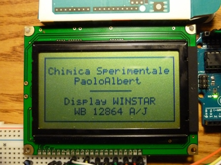

Ogni tanto viene il turno di qualcosina di elettronico ed è quello che capita oggi.
Questo post serve soprattutto a me, per ricordarmi un cablaggio particolare; se dovessi perdere degli appunti so che qui di sicuro ritroverò quello che cerco.
Ma potrebbe servire anche a qualcun altro alle prese con le difficoltà e le perdite di tempo che ho avuto io; siccome i poteri concessi a San Google sono quasi infiniti, potrebbe darsi che quel qualcuno venga dirottato da queste parti, meravigliandosi di trovare in un blog una inaspettata scorciatoia per i suoi problemi.
Il fatto è che nell'unica fiera dell'elettronica (degna del titolo) rimasta in circolazione, ho preso tempo fa per 4 euro un bel display grafico da 8192 pixel (128 colonne, 64 righe), ripromettendomi di giocarci un po' interfacciandolo con Arduino.
Gli esperti di questo magico microcontrollore non hanno certo bisogno degli appunti del sottoscritto... ma, come dicevo, scrivo soprattutto per me.
Il display in oggetto è spesso reperibile a prezzo ridicolo nelle cosiddette "fiere dell'elettronica", in mezzo ad un'accozzaglia di cineserie.
Si tratta del WINSTAR WB12864 A/J, a 22 pin anzichè i soliti 20, con due microchip grafici NT7108.
Per il comando con Arduino ha bisogno delle librerie GLCD.h e allFonts.h
Ecco il cablaggio da realizzare:
Pin del WB12864A/J Pin di Arduino
1 GND ------------------ GND
2 +5V ------------------ +5V
3 al pin 18 (contrasto)
4 ------------------------ A3
5 ------------------------ A2
6 ------------------------ A4
7 ------------------------ 8
8 ------------------------ 6
9 ------------------------ 10
10 ------------------------ 11
11 ------------------------ 4
12 ------------------------ 5
13 ------------------------ 6
14 ------------------------ 7
15 ------------------------ A0
16 ------------------------ A1
17 ------------------------ reset
18 al pin 3
19 + 5V
20 220 ohm verso GND (LED rosso)
21 220 ohm verso GND (LED verde)
22 220 ohm verso GND (LED blu)
Collegato in questo modo il display funziona perfettamente, con i tre colori di retroilluminazione a scelta.
In Arduino UNO rimangono a disposizione come IN/OUT solo i pin 0,1,2,3,12,13,A5, sufficienti per farci qualcos'altro.

Le difficoltà (che ho incontrato io) sono che il modello J a 22 pin non è praticamente mai citato nelle ricerche in rete e che un errore nel cablaggio di uno dei circuiti sui quali mi ero basato mi ha fatto perdere parecchio tempo perchè le coordinate 0,0 anzichè corrispondere alla prima colonna/prima riga corrispondevano alla 60quattresima colonna (erano invertiti i pin A0 e A1 che corrispondono al comando dei due chip a bordo del display).
Buon lavoro!
2 commenti